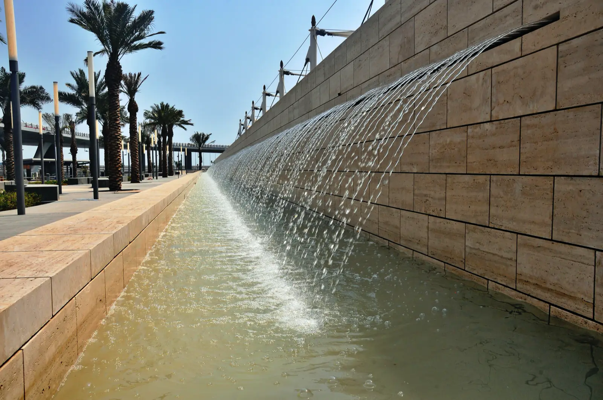
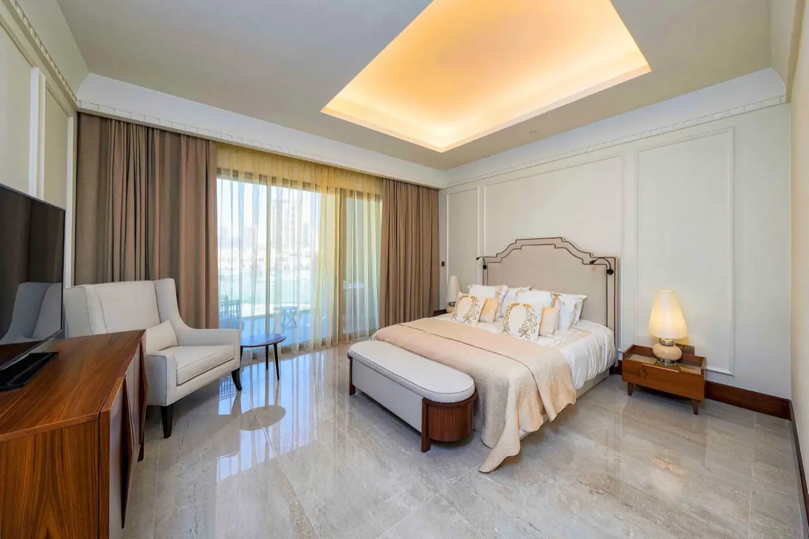
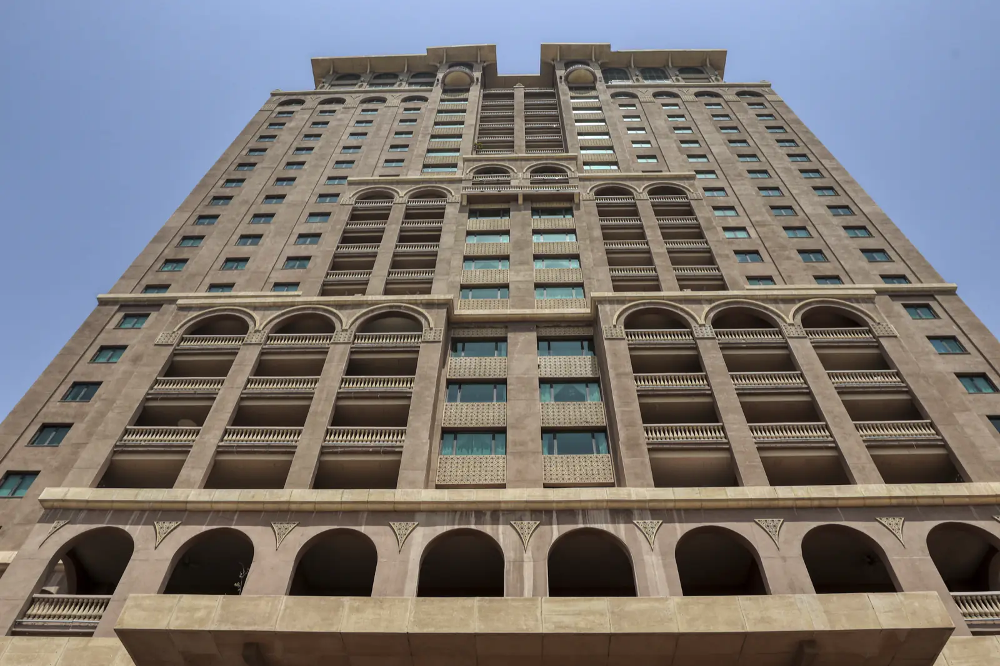

بناء بنظام تسليم المفتاح
البناء هو عمل CDC الأساسي. نتولى المشروع من الاستشارة والتخطيط والتراخيص، إلى التصميم والهندسة والتوريد والتنفيذ والتشغيل التجريبي، ثم إدارة المرافق، ضمن البرنامج الزمني والميزانية في العقد.

الخدمات
01الهندسةمدنية، بناء، تصنيع، نفط وغاز، بنية تحتية، اتصالات
مهندسونا يغطون الطاقة والبناء والأعمال الكهروميكانيكية والتصنيع والتوريد وإدارة المشاريع. وتملك CDC حصصاً في مشاريع وشركات، فننظر إلى العمل بعين المالك وعين المهندس معاً.
- الهندسة المدنية
- البناء
- التصنيع
- النفط والغاز
- البنية التحتية
- الاتصالات

02التوريدالمادة الصحيحة في الموقع وفي وقتها
التوريد والتخطيط والهندسة يعملون معاً، فتصل المواد بلا هدر وفي موعدها. كل مورد يُعتمد أولاً باستبيان تقييم، ثم يُقيَّم أداؤه بنظامنا الإلكتروني.
- توريد من كل العالم
- مواد صحيحة واقتصادية
- تسليم في الموعد
- إلى المكان المحدد في الموقع

03البناء والتطويرأبراج وفنادق وفلل ومجمعات ومبانٍ للمطارات
أشركونا مبكراً ونوفر عليكم: نتوقع مشاكل المشروع ونحلها على المخططات قبل أن تصل إلى الموقع. معداتنا وفرقنا تتحرك لكل مشروع، والتدريب مستمر داخل الشركة وخارجها.
- تطوير الأراضي
- أبراج تجارية وسكنية
- تاون هاوس
- فلل فاخرة
- مباني المطارات
- تجديد الفنادق

04ضمان الجودةISO 9001 · ISO 14001 · OHSAS 18001
تُحدد كل متطلبات الجودة قبل بدء العمل. موظفو ضبط الجودة المؤهلون يفحصون كل شيء، ومنه عمل المقاولين من الباطن، وفق خطة جودة المشروع وبيانات الطرق وتعليمات العمل. أجهزة القياس معايرة، والتدقيق الداخلي يراجع النظام نفسه.
- نظام إدارة متكامل
- خطة جودة لكل مشروع
- تدقيق داخلي للجودة
- معايرة أجهزة القياس

05المعدات والآلياتمعداتنا الثقيلة وأسطول النقل والورشة
ورشة المعدات تصون وتصلح كل آلية ومركبة ضمن برنامج صيانة وقائية، وتضيف معدات جديدة حسب حاجة العمل، وتدرّب مشغلي الرافعات البرجية والمعدات الثقيلة وتمنحهم الشهادات. وتفحص جهة خارجية المعدات بانتظام.
- رافعات برجية وديريك ومتحركة
- أذرع ومضخات الخرسانة
- مصاعد الركاب ومنصات العمل
- حفارات وممهدات ولوادر
- مولدات وأبراج إنارة
- شاحنات قلابة ومقطورات وصهاريج

06التشغيلإدارة المرافق والتأمين بعد التسليم
عملنا لا ينتهي عند تسليم المفاتيح. إدارة المرافق والتأمين تكمل السلسلة، وتملك CDC وتشغّل مشاريع مرتبطة بخبرتها. برج 31 وويست بالم بيتش في سجلنا نفذتهما CDC لحسابها.
- إدارة المرافق
- التأمين
- الصيانة بعد الإنجاز

عندك مشروع في قطر؟
أرسل المخططات أو مستندات المناقصة إلى قسم البناء. وإذا كان الاستفسار عن أعمال الطاقة فاذكر ذلك في الموضوع ليصل إلى قسم الطاقة.